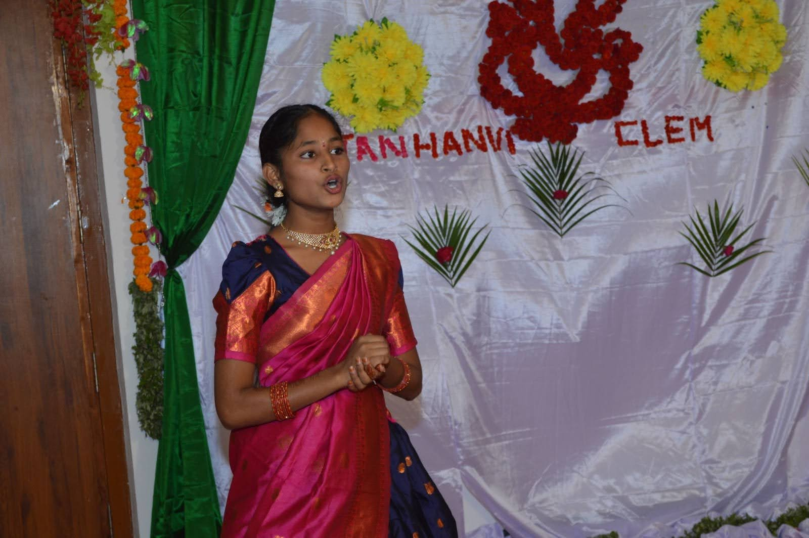

Voices of Aarti
Keerthana
Keerthana’s Equation – solving for a future in Maths
← Back to all stories
At Aarti Village, while the air buzzed with the energy of the school’s Science fair, young Keerthana was called to the Principal’s office and received heartbreaking news: her mother had been tragically murdered.
This loss reopened the deep wound of her father’s unsolved killing when she was just four years old. Finding refuge and support at Aarti Village, Keerthana embraced her studies, fuelled by her mother’s dream of seeing her become an officer. Her hard work and dedication shone through when she not only cleared the first round but also reached the state level in the Maths Olympiad.
Despite the shadows of her past and potential future challenges, Keerthana finds strength and security within the caring community of Aarti Village. Her journey, marked by immense hardship yet brightened by unwavering hope, is a truly inspiring testament to the power of resilience as she builds a brighter future for herself.